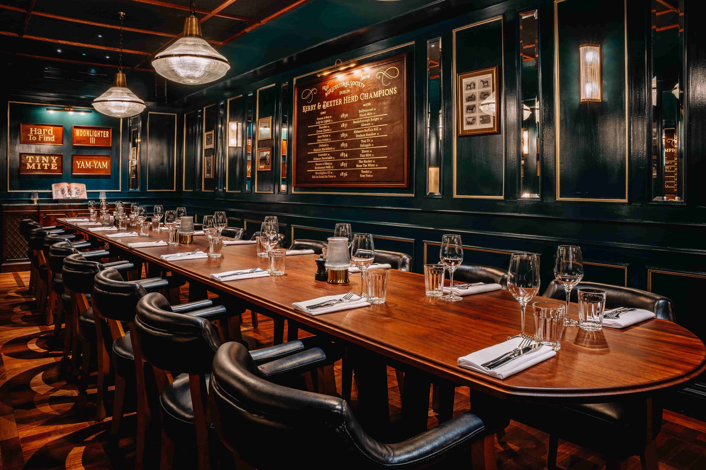

Top Picks
Enjoy a variety of cuisines in Dublin!
Best Dishes
- Irish Stew
- Fish and Chips
- Boxty
Restaurant Info
| Name | Cuisine | Location |
|---|---|---|
| The Winding Stair | Irish | Lower Ormond Quay |
| Chapter One | Fine Dining | Parnell Square |
Enjoy a variety of cuisines in Dublin!
| Name | Cuisine | Location |
|---|---|---|
| The Winding Stair | Irish | Lower Ormond Quay |
| Chapter One | Fine Dining | Parnell Square |